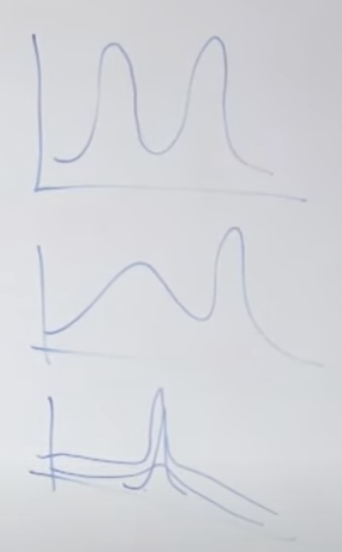

Lec 14-Expectation-Maximization Algo
Contents
Lec 14-Expectation-Maximization Algo#
Outline#
Unsupervised learning
k-means clustering
Mixture of Gaussians
EM (Expectation Maximization)
Derivation of EM
Unsupervised learning#
In supervised learning, we are given labeled data and we classify them and find decision boundary. We are given (x,y)
Instead in unsupervised learning, we are given unlabeled data. We are given only x - \((x^{(1)}, x^{(2)}, ..., x^{(m)})\)
Clustering#
group data into clusters
example - market segmentation
what are the different market segments
age range
education
different parts of country
k-means clustering
k-means clustering#
pick 2 points called cluster centroids
cluster centroids which is your best guess, where the centers of two clusters are
k-means is an iterative algorithm and repeated do 2 things
1st thing
for each training example, color each training example as which cluster centroid is it closer to
2nd thing
for each colored examples, compute the average
move the centroid to the new average
keep looking if the algorithm is converging or not
Algorithm#
Data has no labels : \((x^{(1)}, x^{(2)}, ..., x^{(m)})\)
Initialize cluster centroid \(\mu_{1}, \mu_{2}, ..., \mu_{k} \in \mathbb R^{n}\) - by randomly pick k example out of your training set and set cluster centroids to k-randomly chosen examples
Repeat until convergence
a. Set \(c^{(i)} := \text{arg }\min\limits_{j} \Vert (x^{(i)} - \mu_{j})\Vert_{2}\) (“color the points”)
Set \(c^{(i)}\) equal to either j = 1 or 2 depending on whether that example \(x^{(i)}\) is closer to cluster centroid 1 or 2
Notation:
L1 norm: \(\Vert x \Vert_{1}\)
L2 norm: \(\Vert x \Vert\) or \(\|x\|^{2}\)
b. For j =1,2,..,k (“move the cluster centroids”) $\(\mu_{j} := \frac{\sum\limits_{i=1}^{m} \mathbb 1 \{c^{(i)} = j\}x^{(i)}} {\sum\limits_{i=1}^{m} \mathbb 1 \{c^{(i)} = j\}}\)$
This algorithm is not guaranteed to converge, as it is a non-convex function
Cost/Distortion function $\(J(c,\mu) = \min\sum\limits_{i=1}^{m}\|x^{(i)} - \mu_{c^{(i)}}\|^{2}\)$
how do you choose k?
choose manually, depending on what is the purpose of this algorithm
if it is meant for market segmentation for 4 categories, it makes sense to have 4 cluster rather than more
some formula available
Density estimation#
Applications
unusual/anomaly detection - aircraft
very strange network traffic - anomaly detection
very strange cellular traffic patterns - anomaly detection
Given all the training examples, can you model what is the density from which x was drawn?
if \(p(x) < \epsilon\) is very small, you detect it as anomaly
Mixture of Gaussians
how do you p(x) with the data coming from an L-shaped
there is no single distribution for modeling such complex distributions
instead we can look into mixture of Gaussians models
may be this data comes from two Gaussians
may be there is more probability mass density in the lower Gaussian and low probability mass density in the upper one
contours of Gaussian mixture
Gaussian mixture model#
Lets consider 1 dimensional \((x \in \mathbb R)\)
say there are two Gaussian distributions, and x’s represent data points coming from 1st distribution and o’s represent data points coming from 2nd distribution
following is the overall density of mixture distribution
if we knew that x’s came from Gaussian 1 and o’s from Gaussian 2, then we could have used GDA - Gaussian discriminant analysis to fit this model
the problem is we see only x’s and maybe the data came from 2 different Gaussian, but we dont know which example it came from
the Expectation-Maximization EM algorithm helps us model despite not knowing which Gaussian this example came from
Mixture of Gaussian model#
Suppose there is a latent(hidden/unobserved) random variable z; and \(x^{(i)}, z^{(i)}\) are modeled as a joint distribution
\(p(x^{(i)}, z^{(i)}) = p(x^{(i)}|z^{(i)})p(z^{(i)})\), where \(z \in \{1,2,..,k\}\)
where \(z^{(i)} \sim \) Multinomial(\(\phi\)) \(\Rightarrow p(z^{(i)}=j) = \phi_{j}\) and \(x^{(i)}|z^{(i)} = j \sim N(\mu_{j}, \Sigma_{j})\)
If there are only two distributions, this model will be Bernoulli. If there are k Gaussians, z can take values from \(\{1,2,..,k\}\)
Once we know that the example came from Gaussian number j, then x conditioned that z=j is drawn from a Gaussian distribution with some mean \(\mu_{j}\) and some covariance \(\Sigma_{j}\)
Difference between this model and Gaussian Discriminant Analysis(GDA) is:
In GDA we had labeled examples \(x^{(i)}, y^{(i)}\), where \(y^{(i)}\) was observed. In this model, \(z^{(i)}\) is hidden/unobserved.
In GDA, y took one of two values. Here it is one of k values
In GDA, we used one \(\Sigma\). Here we use \(\Sigma_{j}\).
If and only if we knew \(z^{(i)}\), we can use MLE $\(l(\phi, \mu, \Sigma) = \sum\limits^{n}_{i=1}\log p(x^{(i)}; \phi, \mu, \Sigma)\)$
Maximizing this, we get $\(\phi_{j} = \frac{1}{n}\sum\limits^{n}_{i=1}\mathbb 1\{z^{(i)} = j\}\)\( \)\(\mu_{j} = \frac{\sum^{n}_{i=1}\mathbb 1\{z^{(i)} = j\}x^{(i)}}{\sum^{n}_{i=1}\mathbb 1\{z^{(i)} = j\}}\)\( \)\(\Sigma_{j} = \frac{\sum^{n}_{i=1}\mathbb 1\{z^{(i)} = j\}(x^{(i)} - \mu_{j})(x^{(i)} - \mu_{j})^{T}}{\sum^{n}_{i=1}\mathbb 1\{z^{(i)} = j\}}\)$
But we cannot use these parameters, as we don’t know z
EM algorithm#
1st step - E step - we will guess the values of z
2nd step - M step - we will use the guessed value of z
A bootstrap procedure - Iterate, update the guesses and rerun
E step#
calculate posterior probability
\(w_{j}^{(i)}\) is the strength of how much \(x^{(i)}\) is assigned to that particular \(\mu_{j}\) Gaussian
this is a number between 0 and 1, and the strength of all the assignments and every point is assigned a sign with a total strength equal to 1
will assign 0.8 to more close Gaussian and 0.2 to a more distinct Gaussian $\(w_{j}^{(i)} = p(z^{(i)} = j|x^{(i)}; \phi,\mu,\Sigma) = \frac{p(x^{(i)}|z^{(i)} = j; \mu,\Sigma) p(z^{(i)}=j; \phi)}{\sum_{l=1}^{k} p(x^{(i)}|z^{(i)} = l; \mu,\Sigma) p(z^{(i)}=l; \phi)}\)$
\(p(x^{(i)}|z^{(i)} = j; \mu,\Sigma)\) is given by evaluating the density of Gaussian \(N(\mu_{j}, \Sigma_{j})\) $\(\frac{1}{(2\pi)^{n/2}|\Sigma_{j}|^{1/2}} exp\left( -\frac{1}{2} (x^{(i)} - \mu_{j})^{T}\Sigma_{j}^{-1}(x^{(i)} - \mu_{j}) \right)\)$
\(p(z^{(i)}=j; \phi)\) is the multinomial given by \(\phi_{j}\)
M step#
instead of using indicator function as which gaussian did data point come from, \(w_{j}\) is being used which is the expected value of indicator function \(E[\mathbb 1\{z^{(i)} = j\}]\) which again is equal to probability of indicator function being true
Intuition 1#
In k-means clustering algorithm, hard way of assigning points are being used. We take each point and assign it to one of k cluster centroids. This was hard way of assignment
In EM algorithm, soft way of assigning points are being used. It uses probability in the form of weights, as how much is assigned to Gaussian 1 vs Gaussian 2
It can fit algorithm of different type of Gaussian mixtures, which is a rich distribution
 $\tiny{\text{YouTube-Stanford-CS229-Andrew Ng}}$\(p(x) \ge \epsilon\) - this is okay
\(p(x) \lt \epsilon\) - this is anomaly